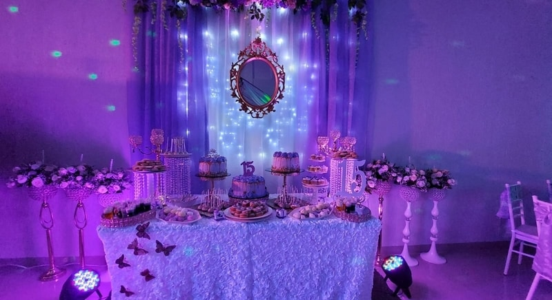

QUINCES LUJO

1. RECEPCIÓN
- Saladitos en mesa durante todo el evento.
2. BRINDIS
- Sidra Cereser.
- Galletas de hojaldre con almendras.
3. BOCADITOS
- Tres rondas de bocaditos calientes y una ronda de bocaditos dulces.
4. BEBIDAS SIN ALCOHOL
- Tres rondas de Cocteles sin alcohol.
- Bar abierto gaseosas, jugos, hielo, agua y limón.
5. MOBILIARIO
- Mesas con mantelería (mantel blanco, sobre mantel de acuerdo a colores a elección).
- Sillas tiffany (Adornadas con gasa del color elegido).
- Mesa para dulces o chocolate con mantel especial y Mesa de torta con mantel especial.
- Cristalería necesaria para el evento.
- Platillos y cucharillas para torta.
- Ambiente exclusivo para la quinceañera.
- Circuito cerrado de cámaras de seguridad.
- Iluminación decorativa con luces led de color en dry walls.
6. SONIDOS Y EFECTOS ESPECIALES
- Amplificación con música coordinada con el cliente.
- 10 Cabezas led ambientales y control DMX de luces.
- 2 cabezas led móviles.
- Laser punta gruesa.
- Bola de discoteca.
- Máquina de humo aromático.
- 2 Cañones de fuego.
- Proyector y Pantalla gigante (incluye video de historia de vida).
- Máquina de niebla baja y Pirotecnia fría para el acto central.
- Maestro de ceremonias con protocolo coordinado con el cliente.
7. PERSONAL
- Coordinadora del evento con ensayos programados con el cliente.
- DJ profesional y Maestro de ceremonias.
- Garzones.
- Seguridad
- Limpieza.
- Recepción.
8. CONDICIONES
- Una vez confirmada la fecha del evento, la reserva se realiza con un deposito del 50% del valor total del paquete, el saldo final se paga una semana antes del evento.
- El numero definitivo de invitados, menú y otros se confirmará 7 días antes de la fecha del evento.
- Se programará el día de la degustación de la cena y/o bocaditos para la elección de los novios (adicional).
- La cotización total del paquete no incluye arreglos, flores ni torta.
- La duración del evento es de 7-8 horas y la hora limite de finalización es a las 2:00 a.m., o según ordenanza municipal.
- Se pone a disposición los ambientes del salón para los ensayos.
- La garantía es de 500 Bs. (reposición de cristalería, vajilla, mantelería u otros, se realizará al día siguiente al evento).
- Medidas de seguridad: Todos los proveedores cuentan con todas las medidas de seguridad y desinfección tanto de mobiliario como de todo lo que se usará el día del evento. La comida se servirá con todos las medidas de bioseguridad.